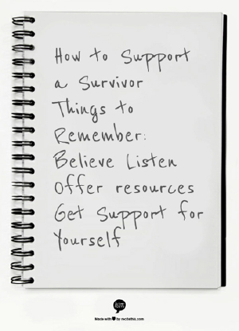

How to Support a Survivor
Often times the first person that a survivor may discuss their experience with is a friend, family member, partner, or a faculty or staff member. When a survivor shares their story, it may be difficult to know how to help, what to say, or even where to start.
It is important to acknowledge that the experience of each survivor is unique. There is no one course of action that a survivor "should take" or a specific way that a survivor "should act". There are, however, some important things to keep in mind when offering support to a survivor of interpersonal violence
Friends
Faculty or Staff
Parents
For Partners
The survivor's safety comes first.
 VAV uses the acronym BLOG for a quick reference to best practices for supporting a survivor - Believe, Listen, Offer Resources and Get Support for Yourself. We don't expect you to be an expert but if you can remember to Believe, Listen, Offer Options and Get Support for Yourself you'll be making an incredible difference in the life of a survivor who has decided to disclose to you. Remember that any act of interpersonal violence can feel like someone's power has been taken away from them. Supportive response is about empowering a survivor to choose what happens next and honoring that decision.- Believe them. Let them know you understand this may be hard to discuss, and you are glad they trusted you.
- Listen. Ask how you can be supportive and what they need. Speak only for yourself. Express your feelings and observations, not beliefs. Be patient.
- Offer options and resources without pushing for one option over another.
- Get Support for Yourself
- Ask if they feel safe before ending the conversation; if they do not, consider calling a crisis hotline together such as the CMHC Crisis Line (512) 471-CALL (2255) or SafePlace, 512-267-SAFE (7233), available 24/7.
Things to avoid:
Acknowledge that the experience of each survivor is unique - avoid making comparisons or assumptions when talking to your friend. Helping them learn about options and/or making the decision to seek help.
Talk with your friend about options. Interpersonal violence may feel very disempowering and it is important that a survivor be allowed to decide if, when, and how they will pursue these resources. As a friend, you may not have all of the answers and this is ok. Your role is to provide a listening ear, accompany your friend to resource appointments, look up information about reporting options and/or university procedures, and/or provide your friend with relevant, helpful phone numbers if necessary.
Privacy and confidentiality can be very important to a survivor's safety and ongoing decision making. Do not share information regarding a survivor's experience without their consent and if possible, avoid this completely unless you feel that there is an immediate threat of danger to the survivor or to others. It is possible to gather information on resources and/or relevant policies and procedures regarding interpersonal violence without providing identifying information or details of a survivor's story.
If you are also a student of The University of Texas at Austin, you are welcome and encouraged to access individual counseling at the Counseling and Mental Health Center. More on individual counseling can be found here: www.cmhc.utexas.edu/individualcounseling.html
Privacy and confidentiality are very important to a survivor's safety and ongoing decision making. The best and most-survivor-centered practice is to pause a student before they disclose their story to let them know that depending on the level of detail they share, you may be required to report the incident to the Title IX Coordinator, which may lead to an investigation by the university. The University has an obligation to investigate or otherwise remedy every alleged instance of sexual assault, sexual misconduct, and/or sexual harassment of which is is aware . The University may proceed to address the matter with the accused student under the University's discipline process, even if that student chooses not to file a complaint with Student Conduct and Academic Integrity (SJS).
Should a student choose not to disclose, you may still refer that student to the Counseling and Mental Health Center (CMHC) Voices Against Violence for counseling and/or advocacy. Learn more about VAV Services for Survivors here.
Should a student choose to disclose after being informed of your duty to report, believe the student. This is the first step in creating a safe environment for a student who may have feeling of guilt, shame, or fear.
Provide non-judgmental support and not promises of "justice." As a faculty or staff member working to support a survivor, there may be a desire to fix the situation for the survivor or assume that the survivor is discussing their experience because they want to hold the perpetrator accountable. This is not always the case and it is important to empower a survivor by listening and offering options rather than jumping to solutions.
Familiarize yourself with available on-campus resources. You are not expected to be a student's counselor or an expert on legal/university systems pertaining to interpersonal violence. You can, however, provide information on who a student may talk with or where they can go to access additional information and resources. You may want to offer connecting the student to Student Emergency Services for information on immediate medical options, academic accommodations and other concerns.
Do not share information regarding a survivor's experience without their consent and if possible, avoid this completely unless you feel that there is an immediate threat of danger to the survivor or to others. Beyond your mandatory reporting obligations, do not share the details of a student's story outside of a need-to-know basis. It is possible to gather information on resources and/or relevant policies and procedures regarding interpersonal violence without providing identifying information or details of a survivor's story.
Finally, serving as a support person for a survivor of interpersonal violence can be difficult. You may want to seek additional support for yourself to process the experience with a trusted person or therapist while respecting the student's confidentiality.
More information about CMHC resources available for faculty and staff can be found here: http://www.cmhc.utexas.edu/facultyandstaff.html
To see the full policy of obligations of the University to investigate, please see: Appendices D and H for more information on Sexual Harassment, Sexual Discrimination and Sexual Assault and General Information Catalog: Appendix C, Chapter 11 for the discipline process.
It is not uncommon for survivors to wait some period of time before disclosing details of their experience to parents. Avoid asking "Why?" questions such as "Why didn't you tell me sooner?" or "Why did you..." These types of questions may feel judgmental or seem to place blame on a survivor when they are not at fault for their experience.
Recognize that your student is in control of the next steps. This may include decisions regarding how much information to share with you as the parent and/or decisions to report to the police or the university, seeking a forensic exam, accessing on-going counseling resources, etc. As a parent, you may wish to learn about available campus, legal, and community resources depending on your student's experience and unique needs.
More information about resources available to parents of students at UT Austin can be found here: http://www.texasparents.org/
As the partner of a survivor, it is normal to have a lot of complicated feelings after learning of the assault. These feelings may range from anger and/or sadness to the desire to protect or help a survivor. It is often difficult to know where to start. First and foremost, it is important to believe you partner. This is the first step in providing a sense of safety for the survivor who may be feeling disempowered, ashamed, numb, guilty, etc. Listen to your partner and validate that interpersonal violence, no matter the circumstances is not their fault.
Acknowledge that the experience of each survivor is unique and avoid comparisons or assumptions when talking to your partner or helping them learn about options and/or making the decision to seek help. Talk with them about what they want to do next and about what types of options may be available to them that are in line with the survivor's wants and needs.
As a supportive person in a survivor's life, you may not have all of the answers and this is ok. Your role may be to provide a listening ear, accompany your partner to resource appointments, look up information about reporting options and/or university procedures, and/or provide partner with relevant, helpful phone numbers if necessary.
Supportive Response for Student Survivors (PDF)
Together we can build a safer campus
Friends: How to Help
Believe the survivor. Listen to your friend and validate that interpersonal violence, no matter the circumstances, is not their fault. It is often very difficult for survivors of sexual assault, relationship violence, and stalking to talk about their experiences. This difficulty may be rooted in feelings of shame, guilt, and/or fear and it is important to keep in mind that your job as a friend is to support a survivor without judgment.
Faculty or Staff: How to Help
As a faculty or staff member who may encounter a student dealing with interpersonal violence, it is important to understand your role within the university system. More specifically, it is important to talk with a student about the limits of your confidentiality as they exist for your position. This is essential when working with students whose ongoing safety may be affected by mandatory reporting policies or who may not wish to report or be ready to discuss their experience.
http://catalog.utexas.edu/general-information/appendices/appendix-d/
http://catalog.utexas.edu/general-information/appendices/appendix-c/student-discipline-and-conduct/
Parents: How to Help
Believe your student and assure them that they are not at fault for their experience(s) of interpersonal violence. It may difficult, as a parent, to understand or discuss circumstances of an assault, but keep in mind that listening to your student and providing them with a non-judgmental space to talk about their wishes and options is ideal. This type of actively listening only serves to re-empower a student who may have already experienced a great deal of disempowerment, guilt, shame, confusion, and/or fear.
For Partners: How to Help